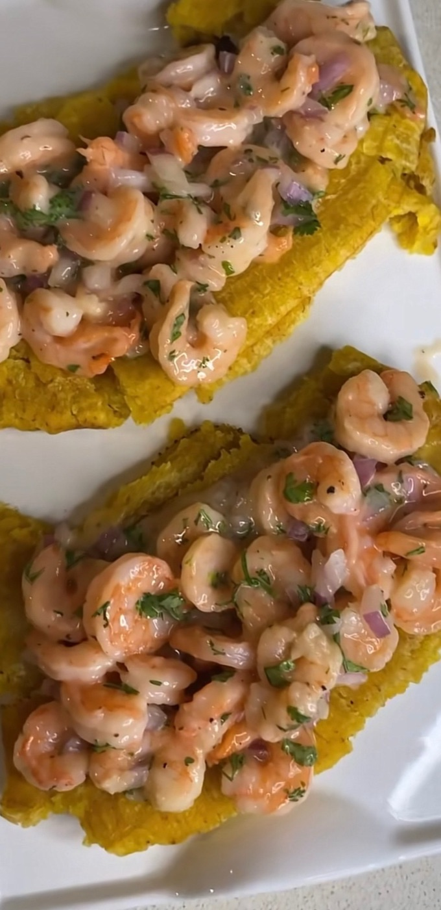

Recipes by Pablo Roldán
Let your imagination fly
Dare to cook with me and let's learn together. The only limits are in your mind.

Patacones with shrimp →Recipes
Patacones with shrimp
Crispy fried plantain topped with shrimp in pink sauce, red onion and cilantro.
View recipe →
PR7 Burger
A three-meat burger with cheese, bacon, onion rings and air-fryer fries.
View recipe →
Panne Cook
A round bread bowl filled with bacon, beef and mushrooms in a creamy white sauce.
View recipe →
Baked tuna
Layers of mashed potato, tuna and a tomato-pepper sauté, with melted cheese and a golden gratin on top.
View recipe →
Cream of spinach soup
A smooth soup of spinach, broccoli and potato, finished with a swirl of cream and crunchy potato chips.
View recipe →